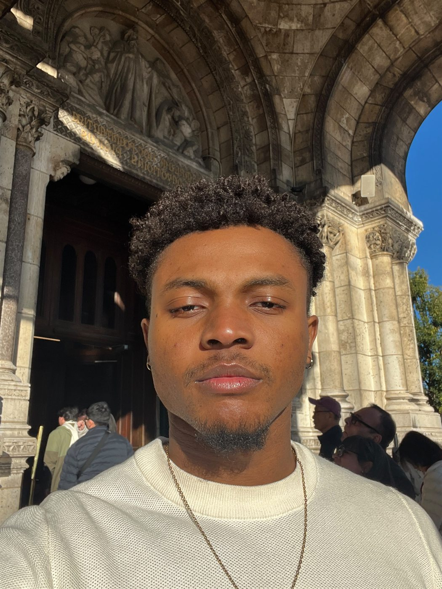

À propos
Nolhan VELASQUES
Je suis Nolhan VELASQUES, et je suis un artiste-designer et chercheur martiniquais.
Dès le plus jeune âge, le dessin a été ma première forme d'expression artistique, qui m'a mené vers le design produit.
Après une licence en design d'objet, spécialisée en éco-conception, je poursuis actuellement un Master 2 en Design – Recherche, Innovation et Développement à Paris.
Ma culture afro-caribéenne constitue l'essence de mes travaux. Ma démarche consiste à questionner mon héritage culturel antillais et ses identités pluriculturelles, afin d'explorer de nouveaux imaginaires postcoloniaux.
Compétences
Logiciels 3D
Suite Adobe
Parcours
2025 — 2027
Master Design – Recherche, Innovation et Développement
École de Condé, Paris
2025 — 2027
Designer en alternance — Overade
Alternance avec l'École de Condé. [Missions à compléter depuis LinkedIn]
2022 — 2025
DNMADE — Diplôme National des Métiers d'Art et du Design
Mention Objet, spécialité éco-conception · Lycée François Magendie, Bordeaux